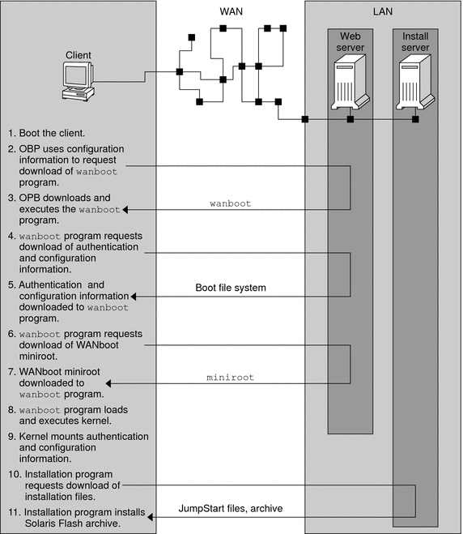

|
|||
|
Part I Planning to Install Over the Network 1. Where to Find Solaris Installation Planning Information 2. Preconfiguring System Configuration Information (Tasks) 3. Preconfiguring With a Naming Service or DHCP Part II Installing Over a Local Area Network 4. Installing From the Network (Overview) 5. Installing From the Network With DVD Media (Tasks) 6. Installing From the Network With CD Media (Tasks) 7. Installing Over the Network (Examples) 8. Installing From the Network (Command Reference) Part III Installing Over a Wide Area Network Security Configurations Supported by WAN Boot (Overview) 10. Preparing to Install With WAN Boot (Planning) 11. Installing With WAN Boot (Tasks) 12. SPARC: Installing With WAN Boot (Tasks) 13. SPARC: Installing With WAN Boot (Examples) |
How WAN Boot Works (Overview)WAN boot uses a combination of servers, configuration files, Common Gateway Interface (CGI) programs, and installation files to install a remote SPARC based client. This section describes the general sequence of events in a WAN boot installation. Sequence of Events in a WAN Boot InstallationFigure 9-1 shows the basic sequence of events in a WAN boot installation. In this figure, a SPARC based client retrieves configuration data and installation files from a web server and an install server over a WAN. Figure 9-1 Sequence of Events in a WAN Boot Installation
Protecting Data During a WAN Boot InstallationThe WAN boot installation method enables you to use hashing keys, encryption keys, and digital certificates to protect your system data during the installation. This section briefly describes the different data protection methods that are supported by the WAN boot installation method. Checking the Integrity of Data With a Hashing KeyTo protect the data you transmit from the WAN boot server to the client, you can generate a Hashed Message Authentication Code (HMAC) key. You install this hashing key on both the WAN boot server and the client. The WAN boot server uses this key to sign the data to be transmitted to the client. The client then uses this key to verify the integrity of the data that is transmitted by the WAN boot server. After you install a hashing key on a client, the client uses this key for future WAN boot installations. For instructions about how to use a hashing key, see (Optional) To Create a Hashing Key and an Encryption Key. Encrypting Data With Encryption KeysThe WAN boot installation method enables you to encrypt the data you transmit from the WAN boot server to the client. You can use WAN boot utilities to create a Triple Data Encryption Standard (3DES) or Advanced Encryption Standard (AES) encryption key. You can then provide this key to both the WAN boot server and the client. WAN boot uses this encryption key to encrypt the data sent from the WAN boot server to the client. The client can then use this key to decrypt the encrypted configuration files and security files that are transmitted during the installation. Once you install an encryption key on a client, the client uses this key for future WAN boot installations. Your site might not permit the use of encryption keys. To determine if your site permits encryption, ask your site's security administrator. If your site permits encryption, ask your security administrator which type of encryption key, either 3DES or AES, you should use. For instructions on how to use encryption keys, see (Optional) To Create a Hashing Key and an Encryption Key. Protecting Data by Using HTTPSWAN boot supports the use of HTTP over Secure Sockets Layer (HTTPS) to transfer data between the WAN boot server and the client. By using HTTPS, you can require the server, or both the server and the client, to authenticate themselves during the installation. HTTPS also encrypts the data that is transferred from the server to the client during the installation. HTTPS uses digital certificates to authenticate systems that exchange data over the network. A digital certificate is a file that identifies a system, either a server or client, as a system to trust during online communication. You can request a digital certificate from an external certificate authority, or create your own certificate and certificate authority. To enable the client to trust the server and accept data from the server, you must install a digital certificate on the server. You then instruct the client to trust this certificate. You can also require the client to authenticate itself to the servers by providing a digital certificate to the client. You can then instruct the server to accept the certificate's signer when the client presents the certificate during the installation. To use digital certificates during the installation, you must configure your web server to use HTTPS. See your web server documentation for information about how to use HTTPS. For information about the requirements to use digital certificates during your WAN boot installation, see Digital Certificate Requirements. For instructions about how to use digital certificates in your WAN boot installation, see (Optional) To Use Digital Certificates for Server and Client Authentication. |
||
|